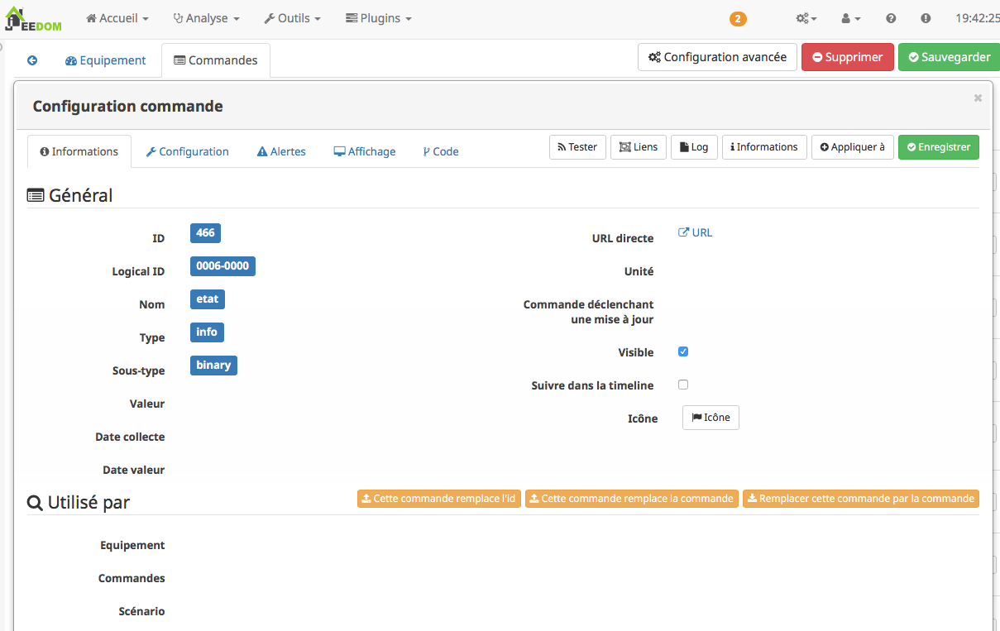
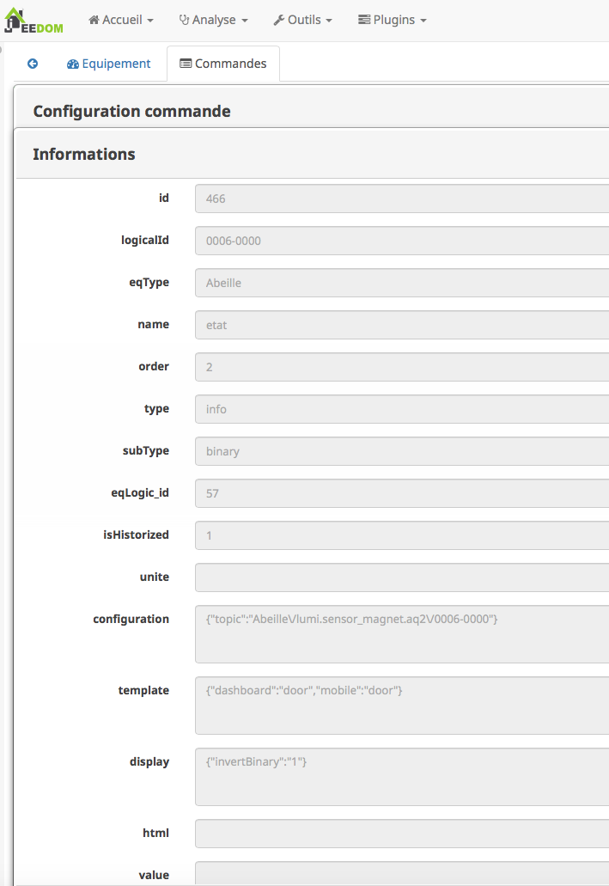
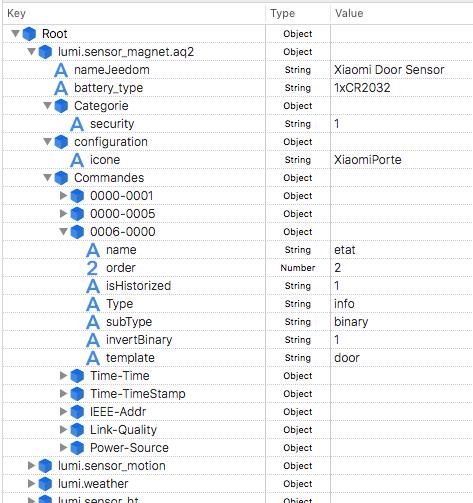
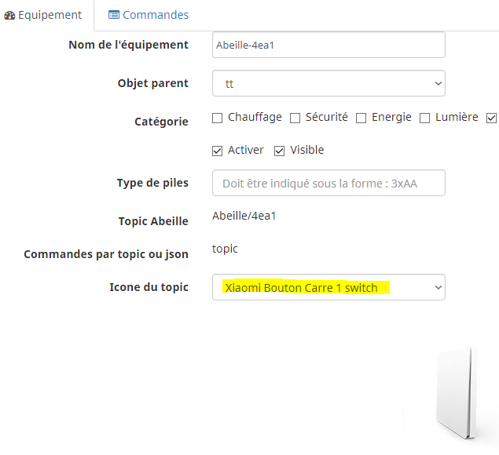

Modele et Fichier JSON¶
(Cette partie doit être revue et mie a jour sur la base des dernieres evolutions)
Configuration des objets¶
Losqu’un objet Zigbee remonte son nom à Jeedom, le plugin Abeille utilise celui-ci pour créer un nouvel équipement dans Jeedom. Le nom permet de déterminer un type d’équipement. Chaque type d’équipement possède sa configuration, ses informations et ses actions. Tour cela est stocké dans un repertoire au nom du périphérique dans lequel se trouve le fichier JSON au nom du périphérique aussi (plugins/Abeille/core/class/devices/name/name.json). ou name = la valeur du message 0000-01-0005 (avec qq traitements pour enlever les espaces ou les “lumi” qui se repetent).
Actuellement nous y trouvons les Xiaomi temperature rond et carré, capteur présence, interrupteurs, prise et un type de lampe IKEA et la liste continue à s’allonger.
L’idée est de pourvoir étendre au fur et à mesure la listes de objets connus avec le retour des utilisateurs (voir aussi le mode semi automatique pour collecter des informations: https://github.com/KiwiHC16/Abeille/blob/master/Documentation/Debug.asciidoc=creation-des-objets).
Interface Jeedom¶
Penons un exemple: Capteur de porte Xiaomi.
Dans Jeedom, il apparaîtra sous le widget:

Son nom est pour l’occasion “lumi.sensor_magnet.aq2”. C’est à partir de là que tout le reste a été déduit, par exemple le symbole de porte,...
Si vous sélectionnez, l’objet vous arrivez dans la page suivante:

En sélectionnant “Configuration Avancée”:

Vous pouvez voir tous les paramètres associés à l’équipement et vous en servir d’exemple pour définir les paramètres de configuration à mettre dans le fichier JSON.
Attention tous les paramètres ne sont pas encore pris en compte.
Puis si vous sélectionnez “Commandes”, puis une commande spécifique à l’aide du symbole engrenage:
Puis si vous sélectionnez une commande spécifique comme l’état:
Vous pouvez voir tous les paramètres associés à une commande et vous en servir d’exemple pour définir les paramatres de configuration à mettre dans le fichier JSON.
Si vous modifiez à l’aide de Jeedom la présentation de la commande cela vous permet de savoir ce qu’il faut mettre dans le fichier de conf.
Mais attention car il y a un mais, tous les paramètres ne sont pas encore gérés par Abeille, mais c’est prévu.
Editer JSON¶
(Cette partie doit être mise à jour car les fichiers JSON ont beaucoup changés)
Vous avez plusieurs façons pour éditer le fichier JSON. * La premiere est d’éditer le fichier sous format texte mais je ne vous le conseille pas car ce n’est pas facile à lire et à modifier (beaucoup de parentheses ouvrantes et fermantes qu’il faut absolument respecter) * Utiliser un éditeur JSON (il y en a plein sur internet).
Une fois ouvert le fichier peut ressembler à quelque chose comme ca:
Vous retrouvez les même informations que celles vues ci dessus. Comparez les différents équipements entre eux cela vous aidera à comprendre les paramètres. Vous pouvez faire des copier / coller avec vos informations et sauvegarder. Le fichier est lu à chaque nouvel équipement donc vous pouvez rapidement voir le résultat. Pour cela supprimez l’équipement dans Jeedom et provoquez l’envoie du nom par l’objet.
Les fichiers JSON ont évolués et intègrent des include. Les fichiers JSON include sont dans le répertoire Template. Ces fichiers permettent de définir les commandes individuellement et de ne pas avoir à tout réécrire à chaque fois.
PS: si vous supprimez un équipement, n’oubliez pas que cela supprime aussi l’historique des valeurs.
Ajout des icônes pour les objets crées¶
Lorsqu’un objet est crée, une icône lui est associée. Lorsqu’un nouvel objet est ajouté dans le fichier JSON “plugins/Abeille/core/class/devices/objet.json”, il est possible de lui attribuer une icône personnalisée. Le nom affichée est celui du champ nameJeedom, l’icone utilisée celle de configuration->icone
Le fichier image au format png nommé node_objet.png est a déposer dans le répertoire _plugins/Abeille/images/_ (500x500 px semble correct)
Mise a jour des fichiers JSON¶
Vous pouvez mettre à jour les fichiers JSON depuis la page de configuration du plugin: menu->PLugin->Gestion des plugin->Abeille. Pour se faire, clic sur le bouton: “Mise a jour des modeles”. Cela va télécharger les dernières versions sur votre systeme. Attention: si vous avez des JSON perso, ils seront effacés lors de cette opération. Les sauvegarder et les réinstallé après.
Ensuite vous n’avez plus qu’a appliquer ces nouveau modèles en utilisant le bouton “Appliquer nouveaux modeles”.
Vous pouvez aussi appliquer les nouveaux modeles que sur certains équipements en allant dans menu->plugin->Protocole domotique->Abeille, selectionnez les devices et clic qur “Apply Template”.
Creation des objets¶
- Les modèles des objets sont dans un fichier JSON, ce fichier peut être éditer pour modifier les configurations pas défaut et ajouter de nouveaux modèles par exemple.
- L’appareil Ruche contient une commande cachée par type d’objet (identifié das le fichier JSON). Chaque commande cachée permet la création d’objets fictifs pour vérifier la bonne création de l’objet dans Jeedom. Pour avoir les commandes, il faut regénerer l’objet Ruche pour prendre en compte les modifications éventuelles du fichier json. Pour ce faire supprimer Ruche et relancer le démon. Puis un clic sur le bouton pour créer l’objet.
- Si vour rendez visible ces commandes cachées cela donne:
- En cliquant sur l’un de ces boutons vous vérifier vous testez la bonne création des objets mais aussi que le chemin Jeedom->Mosquitto->Jeedom fonctionne.
- Pas recommandé: Vous pouvez tester la création pure des objets en ligne de commande avec: “php Abeille.class.php 1” en ayant mis les bon paramètres en fin de fichier “Abeille.class.php” (A faire que par ceux qui comprennent ce qu’ils font)
- L’objet obtenu ressemble à cela pour un Xiaomi Temperature Rond:
- Si un objet type Xiaomi Plug, Ampoule IKEA (Il faut que l objet soit en reception radio) a été effacé de Jeedom vous pouvez l’interroger depuis la Ruche et cela devrait le recréer. Mettre dans le champ “Titre” de Get Name, l’adresse (ici example 7c54) et faites Get Name. Rafraîchir la page et vous devriez avoir l’objet.


- Pour un objet qui n’est pas un routeur, exemple Xiaomi IR Presence, qui donc s’endort 99% du temps, il n’est pas possible de l’interroger pour qu’il provoque la création de l objet dans Jeedom. Mais vous pouvez créer l objet en allant dans les commandes de la ruche.
- Ouvrir la page commande de la ruche et trouver la commande “lumi.sensor_motion”.

Remplacez “/lumi.sensor_motion/” l’adresse du groupe que vous voulez controler. Par exemple AAAA.

Sauvegardez et faites “Tester”.
Vous avez maintenant une capteur.

- Vous avez aussi la possibilité de lire des attributs de certains équipements en mettant l’adresse dans le titre et les paramètres de l attribut dans le Message comme dans la capture d’écran ci dessous. Regardez dans les logs si vous récupérez des infos (Attention il faut que l’équipement soit à l’écoute):
- Vous avez la possibilité de demander la liste des équipements dans la base interne de la Zigate. Pour ce faire vous avez le bouton “Liste Equipements” sur la ruche. Si vous êtes en mode automatique, les valeurs des objets existants vont se mettre à jour (IEEE, Link Quality et Power-Source). Si vous êtes en mode semi-automatique de même et si l’objet n’existe pas un objet “inconnu” sera créé avec les informations.


- Il peut être nécessaire de faire la demande de la liste pour que les valeurs remontent dans les objets inconnus. Et en attendant un peu on peut avoir un objet avec une longue liste de paramètres (Voir objet 9156 ci dessous).

- Avec la liste des équipements vous avez la liste connue par Zigate dans sa base de données. Vous avez aussi la possibilité de voir la liste des equipments qui se sont déconnectés du réseau. Pour cela, il faut qu’ils aient envoyé une commande “leave” à Zigate et qu’Abeille soit actif pour enregistrer l’information. Le dernier ayant quitté peut être visualisé sur l’objet ruche:

Nous pouvons voir que l objet ayant pour adresse complete IEEE: 00158d00016d8d4f s’est déconnecté (Leave) avec l’information 00 (Pas décodé pour l’instant).
Si vous souhaitez avoir l’historique alors allez dans le menu:

Puis choisissez Ruche-joinLeave:

et là vous devez avoir toutes les informations: